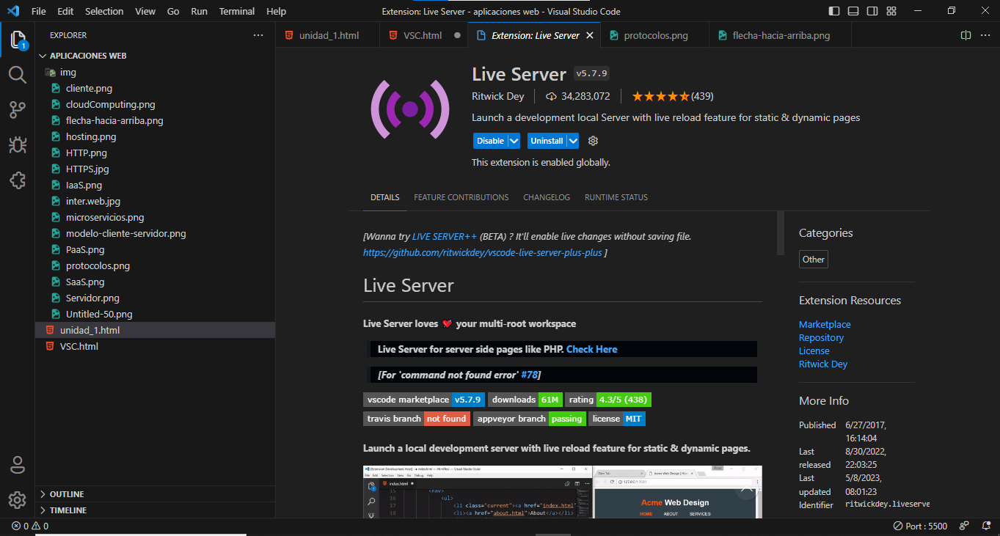

| contenido | |
| Proposito del Software | Proceso de Instalacion |
| Video de Instalacion (Auxiliar) | Evidencia de Instalacion |
El propósito principal de Visual Studio Code es ofrecer un entorno de desarrollo cómodo y fácil de usar para los programadores que trabajan en diferentes plataformas, como Windows, macOS y Linux. Algunas de las características y funcionalidades de Visual Studio
Para Instalar Visual Studio Code, deberas:
En este Video se explica el proceso de instalacion de VSC
Esta es mi evidancia de instalacion
